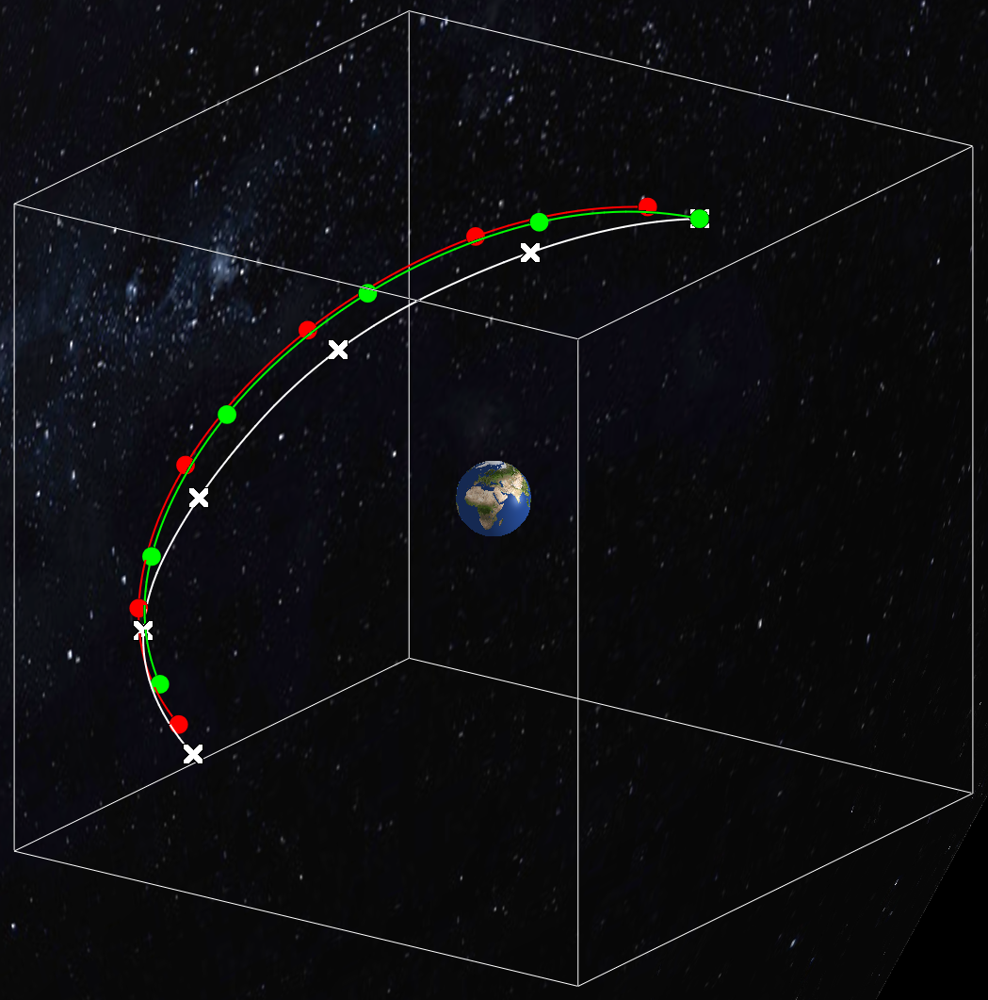

A non-exaustive list of projects that I have been recently involved is presented below.
This is a joint work with Prof. Nils Jensen and Thom Badings from the Radboud University, NL, as well as with Prof. Alessandro Abate. This project involves the construction of abstractions for discrete-time stochastic systems using a non-trivial connection with the scenario approach theory. The generated abstraction consists of an interval Markov Decision process, which we leverage to design feedback control policies for reach-avoid specifications with formal guarantees.
The main representative papers are:

The scenario approach theory provides a beautiful mathematical property of the optimal solution of scenario programs (see optimisation problem below), which can be used to approximate the solution to chance-constraint optimization problems.
\[\begin{align}
\mathrm{minimize} \quad c^\top x
\quad \mathrm{subject~to} \quad g(x,\delta) \leq 0, \forall \delta \in S.
\end{align}\]
I have contributed to the theoretical foundations of the scenario approach theory by showing a tighter bound on the probability of constraint violation when constraints are discarded. This is a joint work with Prof. Kostas Margellos and Prof. Antonis Papachristodoulou. Relevant papers are:
A common and powerful way to think about stochastic systems is through the lens of stochastic kernels, which are measurable maps from the state space (possibly also control space) to the space of probability measures over the state space. Motivated by the fact that we live in a data-rich world, we are exploring how to develop control policies that are robust against kernels that belong ambiguity sets constructed using the available data. My collaborators in this research direction are Prof. Ashish Hota, IIT Kharagpur, and Prof. Alessandro Abate.
This is an ongoing work and I hope to share results here soon.
Robustness in RL is an important and exciting research topic. In this project we charcaterize a notion of robustness for RL policies and propose an algorithm that leverages lexicographic optimisation to obtain a policy that is robust according to our definition. This is a joint work with Daniel Jarne and Prof. Manuel Mazo Jr from TU Delft, NL, as well as with Prof. Alessandro Abate. Relevant papers are: